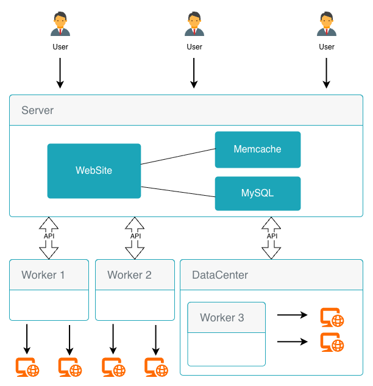

Разверните центральный сервер и запустите легковесные обработчики в любых дата-центрах. Получайте точные и надежные оповещения о простоях.
Начать за 5 минутЗапускайте обработчики в разных сетях и регионах для объективной оценки доступности.
Несколько пользователей, группы и детальная система прав доступа ко всем ресурсам.
HTTP(S), TCP, Ping, а также мониторинг состояния Docker-контейнеров через API.
Настройте оповещения в Telegram и Mattermost. Система не спамит при частичных сбоях.
Централизованное отслеживание состояния ваших контейнеров на всех хостах.
Полная история всех действий пользователей в системе для поддержания порядка и безопасности.
Система состоит из двух компонентов:
akeb/monitoring-worker:latest
Легковесный агент. Выполняет проверки и отправляет результаты на Сервер.

mkdir monitoring-server
cd monitoring-server
Создайте файл .env с вашей конфигурацией:
# Часовой пояс
TZ=Europe/Moscow
# MySQL
MYSQL_PASSWORD=YourSecureRootPassword123
# Порт веб-сервера
NGINX_PORT=80
# Memcached
MEMCACHED_HOST=memcached
# Безопасность - ИЗМЕНИТЕ ЭТО!
PASSWORD_SALT=YourRandomSaltStringHere123456789
Создайте docker-compose.yml:
---
services:
mysql:
container_name: monitoring-mysql
image: mysql:latest
restart: always
environment:
TZ: ${TZ:-UTC}
MYSQL_ROOT_PASSWORD: ${MYSQL_PASSWORD:-RootPassword}
volumes:
- ./mysql_data:/var/lib/mysql
healthcheck:
test: ["CMD", "mysql", "-h", "127.0.0.1", "-u", "root", "--password=${MYSQL_ROOT_PASSWORD}", "-e", "show databases;"]
start_period: 10s
interval: 5s
timeout: 5s
retries: 55
memcached:
container_name: "monitoring-memcached"
image: memcached
restart: always
environment:
TZ: ${TZ:-UTC}
command:
- --conn-limit=1024
- --memory-limit=32
- --threads=4
server:
container_name: "monitoring-server"
image: "akeb/monitoring:latest"
restart: always
environment:
TZ: ${TZ:-UTC}
NGINX_PORT: ${NGINX_PORT:-80}
MYSQL_HOST: mysql
MYSQL_PASSWORD: ${MYSQL_PASSWORD:-RootPassword}
MEMCACHED_HOST: ${MEMCACHED_HOST:-memcached}
PASSWORD_SALT: ${PASSWORD_SALT:-bHchLzC3B99Ss1213127fdw876EDghc2gkDdtg}
volumes:
- ./logs/php/:/var/log/php/:rw
- ./logs/nginx/:/var/log/nginx/:rw
ports:
- "${NGINX_PORT:-80}:80"
depends_on:
mysql:
condition: service_healthy
memcached:
condition: service_started
docker-compose up -dСервер будет доступен по адресу http://ваш-ip-сервера
Откройте браузер и перейдите по IP-адресу вашего сервера.
admin@admin.com и пароль Admin@123)На каждом удаленном сервере, где вы хотите выполнять мониторинг, выполните:
docker run -d \
--name monitoring-worker \
-e SERVER_URL=https://your-monitoring-server.com \
-e WORKER_KEY=your_unique_worker_key_here \
akeb/monitoring-worker:latest
Вы увидите первые результаты в течение минуты!
Полное руководство по установке, настройке и использованию всех функций проекта.